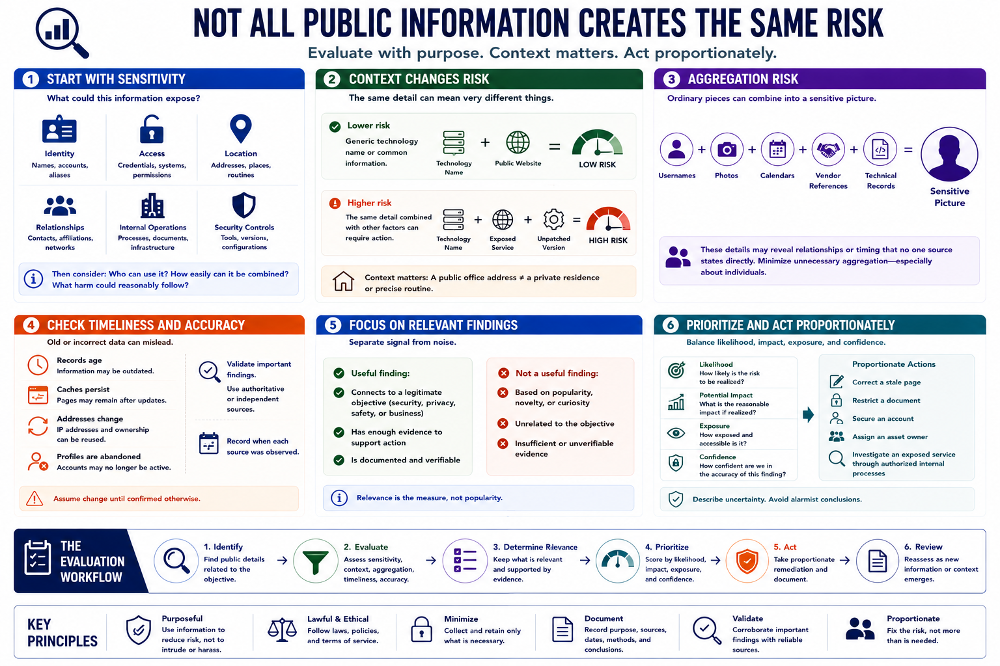

Evaluating Risk and Relevance
Connecting to LMS... Progress: in progress

Narration
Not every public detail creates the same risk. Evaluation begins with sensitivity: could the information expose identity, access, location, relationships, internal operations, or security controls? Then consider who can use it, how easily it can be combined, and what harm could reasonably follow.
Context changes risk. A generic technology name may be low sensitivity, while the same detail combined with an exposed service and unpatched version may require action. A public office address differs from a private residence or precise routine.
Aggregation risk occurs when individually ordinary details combine into a sensitive picture. Usernames, photos, calendars, vendor references, and technical records can reveal relationships or timing that no one source states directly. Analysis should minimize unnecessary aggregation, especially about individuals.
Assess timeliness and accuracy. Old records, cached pages, reused addresses, and abandoned profiles can misrepresent current conditions. Validate important findings with authoritative or independent sources and record when each source was observed.
Separate relevant findings from noise. A useful finding connects to a legitimate security, privacy, safety, or business objective and has enough evidence to support action. Popularity, novelty, or personal curiosity are not measures of relevance.
Prioritize by likelihood, potential impact, exposure, and confidence. Describe uncertainty and avoid alarmist conclusions. Remediation should be proportionate: correct a stale page, restrict a document, secure an account, assign an asset owner, or investigate an exposed service through authorized internal processes.